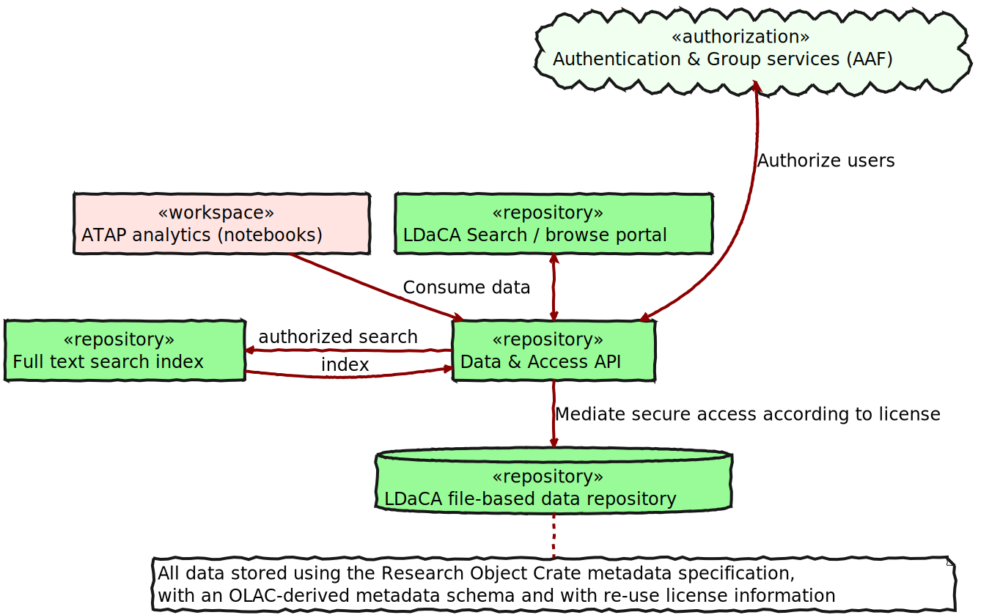
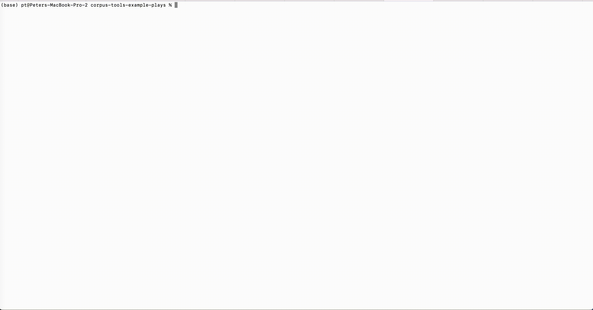
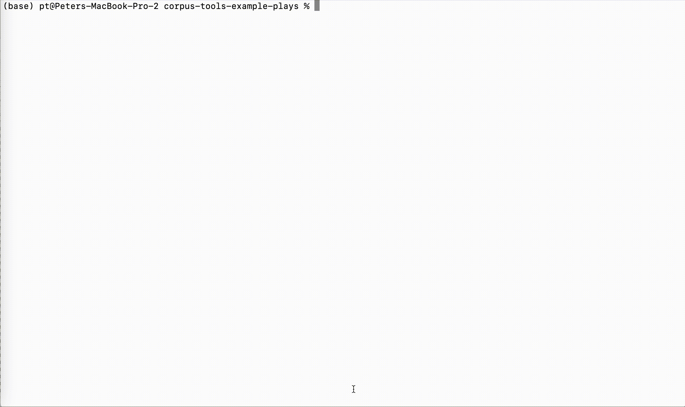
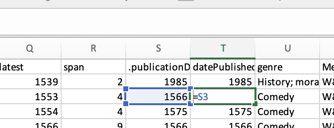
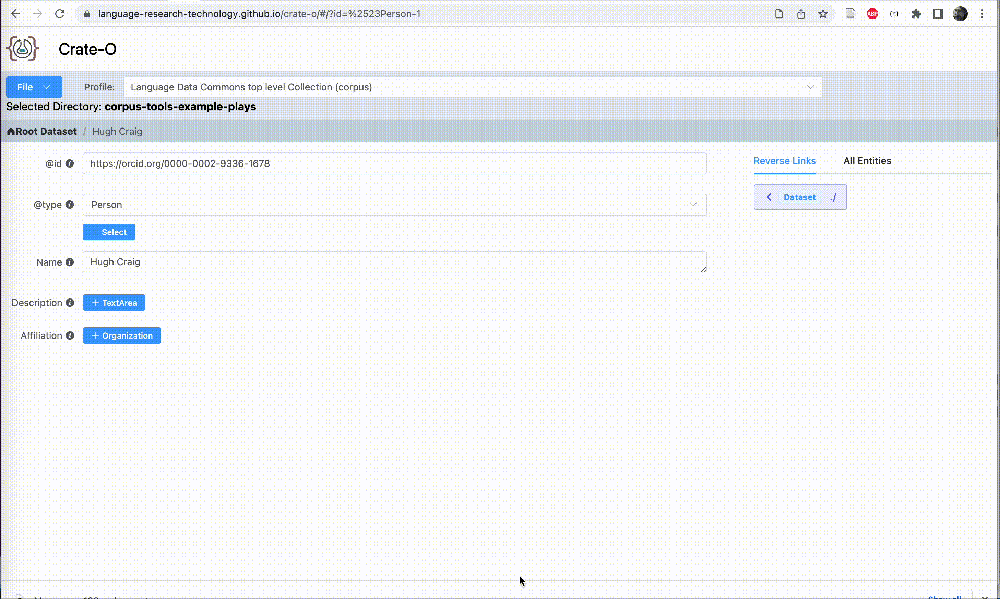
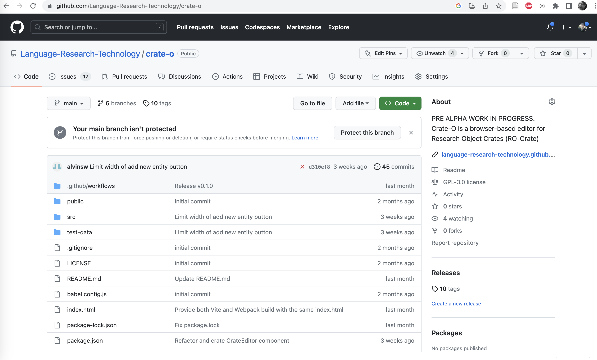
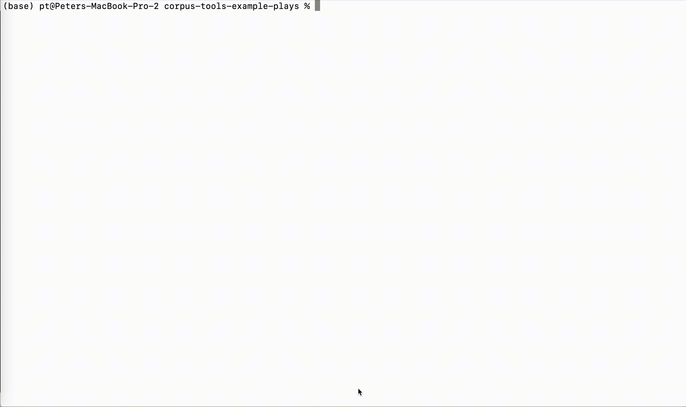
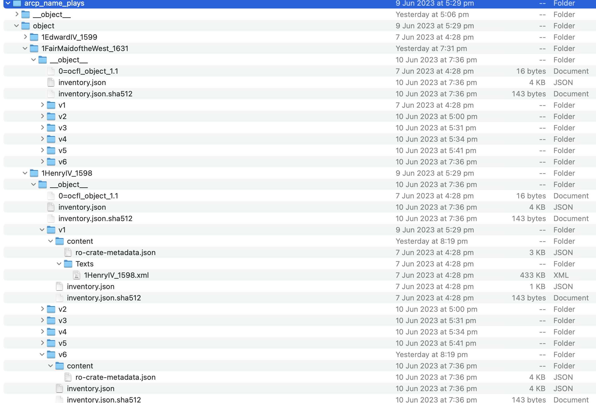

Introducing the Oni Repository Stack
2023-06-13
By:
- Peter Sefton
- Moises Sacal Bonequi
- Alvin Sebastian
- Mark Raadgever
This presentation was delivered by Peter Sefton at Open Repositorites 2023.
Abstract
In this presentation we will show some of the general purpose repository tooling used to manage repository data for the Language Data Commons of Australia and the Australian Text Analytics Platform. We have a standards-based repository stack which is used to make research data available for human and machine-use. The main part of the stack is “Oni” https://github.com/Arkisto-Platform/oni which builds an access-controlled REST API from an Oxford Common File Layout (OCFL) data store (which consists of data objects which are saved as files-on-disk or in object storage), with data objects are described using the RO-Crate metadata standard. Data is indexed into a postgres-driven API for low-level access, and a full discovery index implemented in ElasticSearch, with the ability to create access portals in your web framework of choice. We will demonstrate rapid creation of large scale repositories using batch tooling, as well as using a metadata entry tool known as Describo to produce RO-Crate linked-data descriptions.
This slide shows the "small pieces, loosely joined style of the Oni repository" -- it is based on an OCFL data store for digital objects on disk or object storage - with RO-Crate metadata for each object.
The architecture
This diagram shows the architecture of the Oni system. The name Oni started as an acronym -- Ocfl + NGINX (a web server) + Index (eg Solr or Elastic Search) but we no longer use NGNIX and Oni happens to be a kind of Ogre which has its own emoji 👹.
This demonstration shows and example of how to stand-up a repository for 300 documents, in this case plays in TEI XML format which we got from Professor Hugh Craig. The first steps involve getting the data into an Oxford Common File Layout OCFL repository with each "object" (a play) in the repository described using Research Object Crate metadata: RO-Crate.
Some data – ~300 plays from the 1500s
This screen recording shows a command line session; listing the contents of a data directory full of XML and peeking into the CSV metadata supplied with the files by Professor Craig.
Using RO-Crate-excel, execute a few maneuvers
In this recording, we use the RO-Crate Excel tool to generate an Excel workbook listing all the files.
Paste in the researcher's data
Using Excel, we can manipulate data in a transparent way to get it ready for conversion into RO-Crate format -- the RO-Crate Excel tool uses some conventions that mean we can "show our working" in this process, and mark some of the more esoteric metadata as hidden (for now), though it is still available in the researcher's original ad-hoc CSV format.
Fine tune using Crate-O ...
Here we see the Crate-O metadata tool (which is a zero-install web application that runs in Chrome and other browsers that support the new FilesystemAPI) being used to add an Orgnization as the Affiliation for a Person entity. Having imported this "Context Entity" (that's the RO-Crate term for this type of contextual metadata) it can then be re-used within the crate which we see here as the schema.org publisher property is linked to the same orgnization.
Here's where you get Crate-O
You can get the Crate-O source or try it out at this github repo.
… and you get an RO-Crate for the data
This slide shows generating an HTML preview file that summarizes the data -- the RO-Crate is a JSON-LD file that was created from the spreadsheet shown above, and tweaked using Crate-O. JSON-LD is Linked Data in JSON format, this is what RO-Crate uses to make linked data approachable for a general programming audience.
Then using corpus-tools-ro-crate, make an OCFL repo

This slide shows another script (via a make file that supplies a set of commandline paramaters) which takes the RO-Crate and "explodes" it into a set of OCFL (Oxford Common File Layout) directories in a "Storage Root".
This is the OCFL file layout
Here's what an OCFL repository might look like during development -- I built this on the 'plane to South Africa, somewhere over the Southen Ocean, and you can see that my tweaks to the code resulted in several versions of the OCFL/RO-Crate objects being created. In this recording I navigate to a file, open the RO-Crate Metadata Document, and inspect the metadata profile that it links to from the conformsTo property.
Start up 👹 and index stuff
Type, like:
> docker compose up
... Screenfulls of stuff
> node structural-index.js
{ message: 'Started: database indexer' }
Et Voila!

This is a search portal for the plays with an Elastic search for full text for facets aggregations.
In conclusion, this repository stack is quite different from DSpace, ePrints and other repository systems where everything is built in to one application - the approach is more like the unix
Tools used here
The excel-to-crate tooling:
https://github.com/Language-Research-Technology/ro-crate-excel
The plays example
https://github.com/Language-Research-Technology/corpus-tools-example-plays
More tools
The thing that turns RO-Crate into an OCFL repo:
https://github.com/Language-Research-Technology/corpus-tools-ro-crate
The Oni stack, OCFL library, API and Elastic Search:
https://github.com/Language-Research-Technology/oni-ui